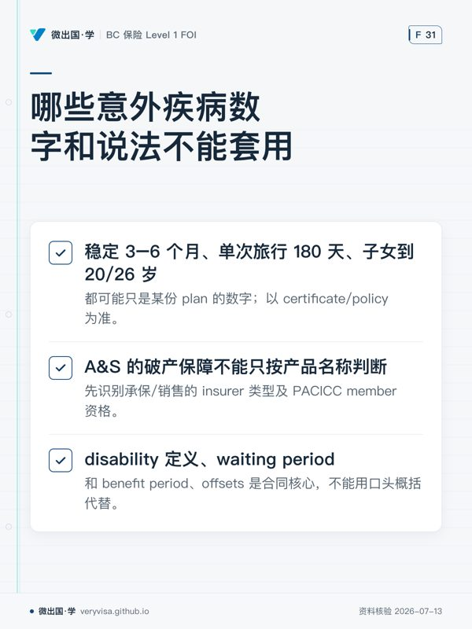

温习目标
- 区分 individual disability、group benefits、travel emergency medical、trip cancellation/interruption 的功能。
- 读懂 definition of disability、elimination/waiting period、benefit period、integration、stability/pre-existing condition 等结构。
- 正确判断 A&S 产品的破产保护路径。
温习卡
| 产品 | 首要分析点 |
|---|---|
| individual disability income | disability 定义、职业/收入、elimination period、benefit period、integration、除外。 |
| group benefits | 资格、雇主计划、终止/转换、协调给付与可携带性。 |
| travel emergency medical | destination、旅程日期、年龄、stability、既往症、emergency assistance、除外。 |
| cancellation/interruption | 被保原因、取消/中断时点、预付不可退费用、通知与文件。 |
2026 易错边界
- “稳定 3–6 个月”“单次旅行 180 天”“子女到 20/26 岁”都可能只是某份 plan 的数字；以 certificate/policy 为准。
- A&S 的破产保障不能只按产品名称判断：先识别承保/销售的 insurer 类型及 PACICC member 资格；life insurer 路径不同。
- disability 定义、waiting period、benefit period 和 offsets 是合同核心，不能用口头概括代替。
闭卷自测
- 旅行者有受控慢性病。为什么不能直接说“稳定三个月就保”？
- 解释 individual 与 group disability coverage 的三项常见比较维度。
- 发生保险人破产时，如何判断 A&S 产品应先研究 PACICC 还是其他保护体系？
- 客户购买旅行取消险后，因家人住院取消行程。列出索赔前需确认的五项事实。
- definition of disability 为什么比“客户不能工作”这一句话更重要？
参考答案与判分点
- stability 的定义可能涉及症状、药物变更、就诊/检查、治疗、既往诊断、年龄和旅程长度；必须按该计划文字和完整披露分析。
- 资格/雇佣关系、保费与雇主贡献、保障定义和限额、可携带性/终止、integration/offsets 等。回答不应把任一产品说成必然更好。
- 先查谁是保险人、是否为 PACICC member、产品是否在受保护类别、相关限额和例外；若由 life insurer 提供，则不能假设 PACICC 适用，应核对相应保护体系。
- plan 类型与购买日期、被保取消原因、家人定义/医疗文件、旅行日期和预付不可退费用、既往症/除外、通知与 assistance requirements。
- 它决定何种功能丧失才触发给付（如本职、任何职业或其他定义），并与等待期、医疗证据和 benefit period 相互作用；不是日常语言判断。
错题记录
| 日期 | 题号 | 我忽略的定义/期间/承保主体 | 下次触发问题 |
|---|---|---|---|
| “这份 certificate 如何定义资格、稳定期和 disability？” |
本页知识卡
不看正文也能拿到这一节的核心内容：先看导读，再看图。点图放大，左右翻页。
- 先看先按产品分行，不要把旅行、团体与失能的判断入口混在一起。
- 易漏每类产品后半段常藏着除外、协调、文件或可携带性，不能只看触发原因。
- 下一步去练习，先辨产品，再列首要分析点。

- 先看先找看似好记的数字，因为它们最容易被误当成统一规则。
- 易漏破产保障要先看保险人类型与会员资格；失能条款则要回到合同本身。
- 下一步去讲义，核对数字出处和合同字段。
本站依据官方原文自撰